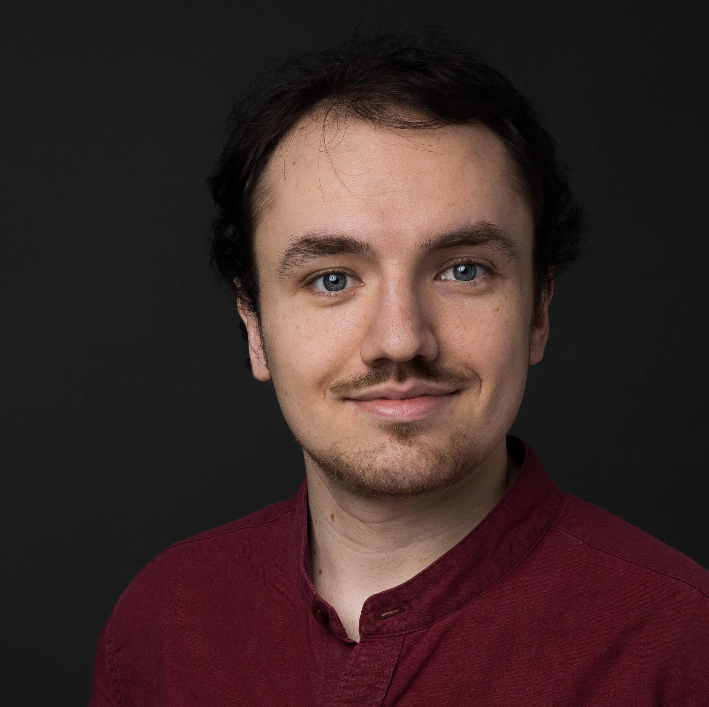

Doctoral Researcher at TU Berlin
Publications

Filament Based Plasma
ACM Transactions on Graphics (TOG) - Proceedings of ACM SIGGRAPH 2022. Vol. 41 Issue 4, July 2022
DOI 10.1145/3528223.3530102

4D Atlas: Statistical Analysis of the Spatio-Temporal Variability in Longitudinal 3D Shape Data
IEEE transactions on pattern analysis and machine intelligence (2022)
arXiv:2101.09403

On Bubble Rings and Ink Chandeliers
ACM Transactions on Graphics (TOG) - Proceedings of ACM SIGGRAPH 2019. Vol. 38 Issue 4, July 2019
DOI 10.1145/3306346.3322962


Point Vortex Dynamics on Closed Surfaces (M.S. Thesis)
2018 TU Berlin Supervision: Ulrich Pinkall
Read more!

The Nearest Hermitian Inverse Eigenvalue Problem Solution with Respect to the 2-Norm
2017 DAAD Rise Worldwide Internship Results
arXiv: 1703.00829
Zeros of Random Sections on Line Bundles (B.S. Thesis)
2016 TU Berlin Supervision: Ulrich Pinkall
Read more!

A.C.T.I.V.E. Superellipsoid-based CFD Visualization
EuroVR 2014 - Conference and Exhibition of the European Association of Virtual and Augmented Reality. The Eurographics Association.
DOI 10.2312/eurovr.20141344

Teaching
About Me
I am a doctoral researcher in Mathematics at the Technical University of Berlin. I work with the Discretization in Geometry and Dynamics research group under the supervision of Peter Schröder (Caltech) and Ulrich Pinkall (TU Berlin) through an Einstein visiting fellowship since May 2018. Since 2021, I am an employee of the TU Berlin. My main interest is the interplay between physical simulations, geometry processing, discrete exterior calculus and applications in graphics and animation.